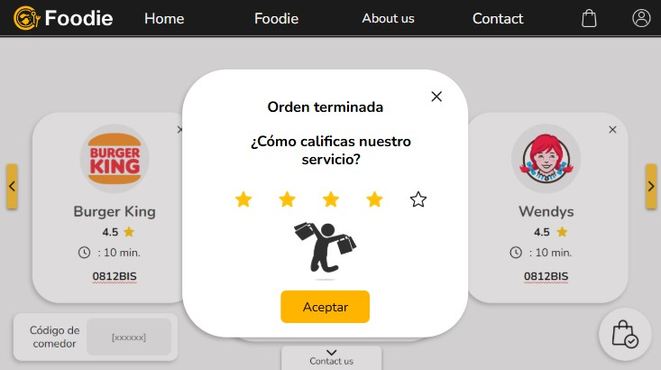

Foodie is a digital pre-ordering platform designed to optimize the way people use their break time in high-demand cafeterias. By allowing users to order in advance and pick up their food at a scheduled time, Foodie reduces waiting lines, decision time, and operational chaos, transforming a common daily frustration into a smooth and efficient experience.
The Challenge
In schools and workplaces, cafeterias often face overcrowding during peak hours. Long waiting lines, unorganized ordering processes, and limited preparation capacity cause users to waste a significant portion of their break time. This not only affects productivity and rest but also generates stress and dissatisfaction among customers.
Surveys conducted during the early stages of the project confirmed this issue: users consistently reported frustration with queues, slow service, and the lack of clarity regarding product availability. The challenge was to design a solution that was intuitive, fast, and accessible, without requiring technical expertise from users.

The Solution
Foodie was developed as a web-based platform that allows users to browse cafeteria menus, place orders in advance, and select a specific pickup time. This approach minimizes congestion, optimizes food preparation, and improves the overall user experience.
The frontend was built using HTML, CSS, and JavaScript, focusing on clarity, simplicity, and fluid navigation. The backend was developed with Node.js, ensuring efficient request handling and secure communication with the SQL database, which manages users, orders, and product availability.
From a design perspective, a minimalist interface was chosen to reduce cognitive load. The visual hierarchy, spacing, and typography were carefully designed to guide users naturally through the ordering process, even during high-stress situations such as short breaks.
Impact & Results
Usability testing with real users showed strong results. Foodie achieved a 97% acceptance rate, with 95% of users reporting a positive experience. On average, the platform reduced waiting and ordering time by up to 64%, allowing users to spend more time resting instead of standing in line.
These results validate Foodie as a practical and scalable solution for educational institutions and workplaces, with strong potential for expansion into larger environments such as industrial facilities.